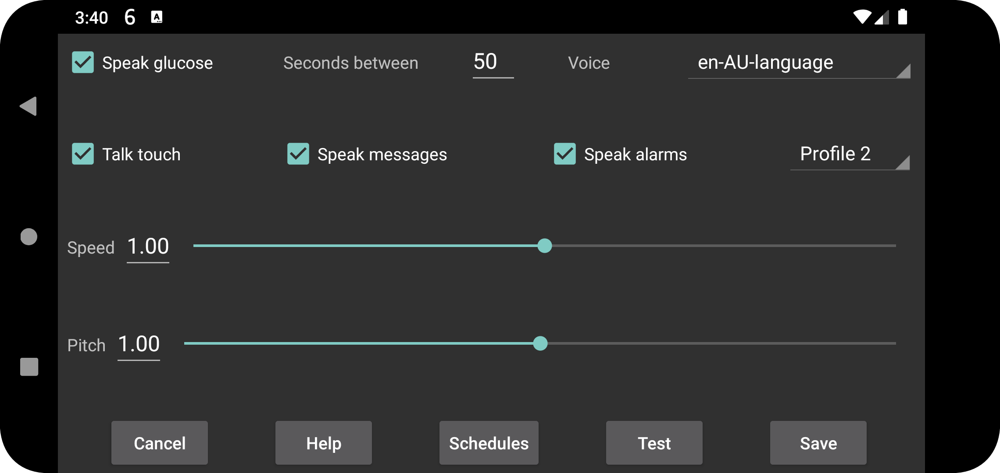

Yeni qlükoza göstəriciləri daxil olduqda onları səsləndirir.
Aradakı saniyə sayı: Növbəti göstəricinin səsləndirilməsinə qədər minimum neçə saniyə keçməli olduğunu təyin edir. Göstərici səsləndiriləcəksə, alındığı anda səsləndirilir; əvvəlki səsləndirmədən göstərilən qədər vaxt keçməyibsə, həmin göstərici buraxılır.
Səs: Mövcud sintez edilmiş səslər siyahısından seçin.
Sürət: Daha böyük ədəd daha sürətli nitq deməkdir.
Səs tonu: Daha böyük ədəd daha yüksək səs tonu deməkdir.
Sına: Ən son qlükoza göstəricisini səsləndirir.
Bəzi telefonlarda bunun işləməsi üçün Android-in mətndən nitqə (text-to-speech) tənzimləmələrini dəyişmək lazımdır. Bəzən dil üçün səs məlumatları quraşdırılmalı və ya mühərrik seçilməlidir. Samsung telefonlarında müxtəlif səsləri seçmək üçün Samsung text-to-speech engine əvəzinə Google text-to-speech seçmək lazım gələ bilər. Bu seçimləri Android tənzimləmələrində text-to-speech axtararaq və ya Dil və daxiletmə → Qabaqcıl → Mətndən nitqə bölməsində tapa bilərsiniz. Orada Speech Services by Google seçib səs məlumatlarını quraşdıra bilərsiniz. Bəzi telefonlarda bu, Sistem tənzimləmələri → Əlçatanlıq → Görmə → Mətndən nitqə tənzimləmələri yolundadır. Menyu adları cihazdan asılı olaraq fərqlənə bilər.
Bu seçim aktivdirsə, ekrandakı müəyyən yerlərə toxunmaq və ya uzun basmaq məlumatları səsləndirir:
Ekranda müvəqqəti görünən mesajları və skanın nəticəsini (xəta mesajlarını və qlükoza göstəricisini) səsləndirir.
Aşağı və yüksək qlükoza siqnalları zamanı qlükoza səviyyəsini səsləndirir. Göstərici siqnalın həm başlanğıcında, həm də dayandırıldığı anda oxunur.
Aktiv profili seçin. İlkin profil Standart-dır. Sol menyu → Tənzimləmələr → Siqnallar və Səsləndirmə tənzimləmələrinin hamısı aktiv profilə aiddir.
Juggluco-nun günün müəyyən saatlarında profilləri avtomatik aktivləşdirməsini təyin edə bilərsiniz.
Səsləndirmənin səviyyəsini Android-in səs tənzimləmələrində dəyişə bilərsiniz. MEDIA söndürülübsə, telefonda bildirişlərin, Wear OS saatında isə sistemin səs səviyyəsi istifadə olunur. Narahat etməyin aktiv olanda səsləndirmə susdurulmalıdır. MEDIA aktivdirsə, media səsinin səviyyəsi istifadə edilir və əksər telefonlarda Narahat etməyin rejimində də eşidilir.
Siqnalları səsləndir seçimi fərqli işləyir. Siqnal növü bölməsində Siqnal seçimi aktivdirsə, xəbərdarlıq Siqnal səs kateqoriyası ilə səsləndirilir. Müəllifin telefonunda səviyyə siqnal sürgüsü, saatında isə bildiriş sürgüsü ilə tənzimlənir.